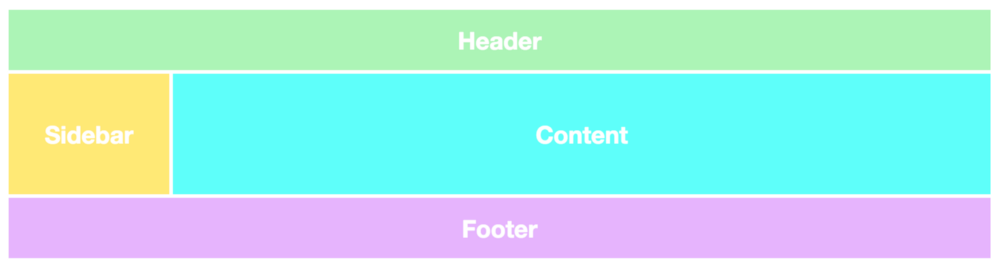
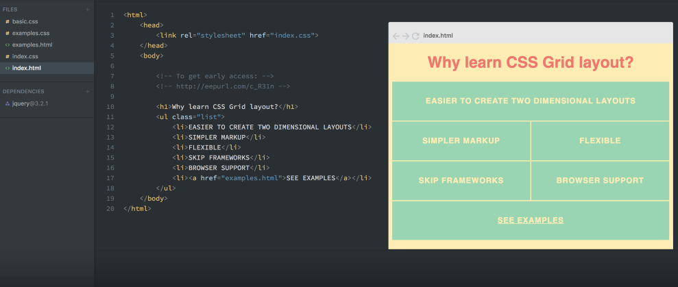
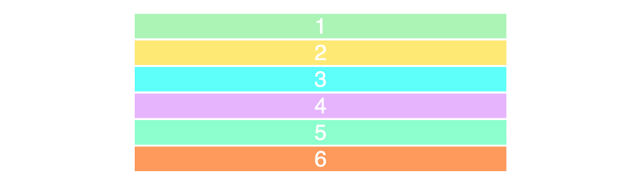
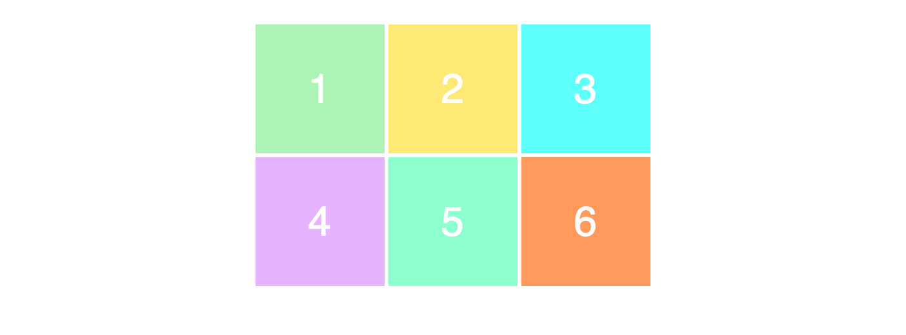
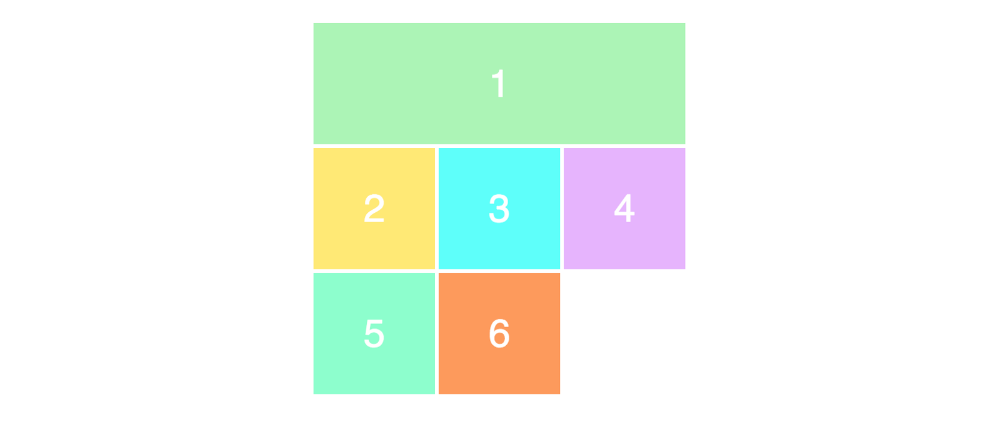
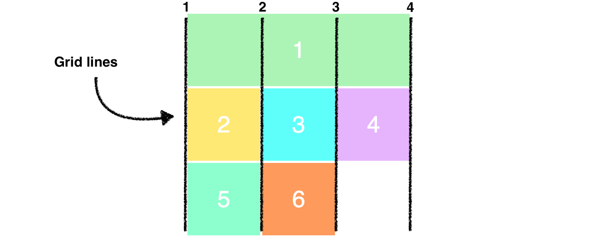
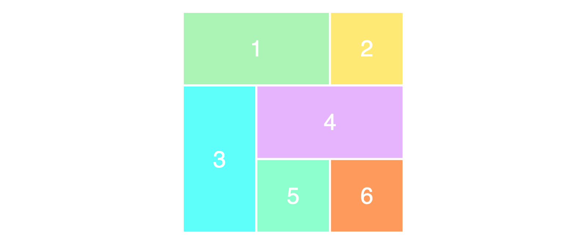

Изучить css-grid
Выучить CSS Grid за 5 минут – миссия выполнима
CSS Grid – это будущее макетов веб-страниц. В нашей статье мы быстро пробежимся по главным моментам, которые помогут во всем разобраться.

Grid Layout – основа основ веб-дизайна, это вам любой верстальщик скажет. А вот модуль CSS Grid представляет собой простой и в то же время мощный инструмент для создания сайта. Я считаю, что это намного лучше, чем, например, Bootstrap. В этом году у модуля также появилась встроенная поддержка популярных браузеров (Safari, Chrome, Firefox, Edge), поэтому любой веб-разработчик в любом случае столкнется с этой технологий, будь то сейчас или позже.

В этой статье мы затронем основные элементы. Поехали!
Ваш первый CSS Grid Layout
Двумя основными компонентами CSS Grid являются обертка (parent) и элементы (children). Обертка – это сетка, внутри которой как раз и содержатся все элементы.
Вот пример разметки для parent с шестью children:
<div class="wrapper">
<div>1</div>
<div>2</div>
<div>3</div>
<div>4</div>
<div>5</div>
<div>6</div>
</div>
Теперь предоставляем обертке div отображение сетки:
.wrapper {
display: grid;
}
Да, сейчас это не работает, но только потому, что еще не определили вид нашей сетки. Пока 6 div просто располагаются друг над другом:

Здесь также добавлены стили, но пусть они вас не путают: стили и CSS эффекты никак не соприкасаются с нашей темой.
Разделяем на столбцы и строки
Давайте определим столбцы и строки, чтобы создать двухмерность. Пусть это будет 2 строки и 3 столбца. Для этого обратимся к grid-template-column и grid-template-row:
.wrapper {
display: grid;
grid-template-columns: 100px 100px 100px;
grid-template-rows: 50px 50px;
}
Мы указали, что у grid-template-columns три значения, следовательно получим столько же столбцов. Аналогичная ситуация со строками: 2 значения в grid-template-rows – это две строки. Наши строки будут задавать ячейкам ширину в 50px, а столбцы – длину в 100px. Имеем следующую разметку:
Давайте проверим, правильно ли вы поняли связь значений и вида нашей сетки. Обратимся к следующему примеру:
.wrapper {
display: grid;
grid-template-columns: 200px 50px 100px;
grid-template-rows: 100px 30px;
}
Постарайтесь нарисовать это в уме. Выглядит вторая разметка так:
Располагаем элементы
А вот размещение элементов в сетке – это уже задача посложнее. Нужно очень хорошо представлять, как это все будет выглядеть. Например, создадим сетку 3х3, пользуясь той же разметкой, что и раньше:
.wrapper {
display: grid;
grid-template-columns: 100px 100px 100px;
grid-template-rows: 100px 100px 100px;
}
Это создаст следующий макет:
Беда в том, что мы видим вариант сетки 3х2, тогда как определяли ее как 3х3. Все потому, что у нас изначально только 6 элементов для заполнения, поэтому еще одну строку мы попросту не видим. Чтобы она стала видимой, нам нужно добавить еще 3 дополнительных элемента.
Чтобы изменить размер или позиционировать элементы, мы воспользуемся их свойствами grid-row и grid-column:
.item1 {
grid-column-start: 1;
grid-column-end: 4;
}
Мы выставляем условие, при котором item1 должен начинаться уже в первой линии и заканчиваться в 4-ом столбце. Таким образом, item1 займет всю первую строку, и мы получим следующую разметку:
Наверное, вас терзает вопрос, почему мы указали в коде 4 столбца, когда у нас их 3? Ну тут все просто: мы говорим не о середине этих столбцов, а о закрывающих их линиях. Посмотрите на следующее изображение, чтобы понять:

Теперь мы работаем со всеми строками в сетке, которые нам видны. Грубо говоря, первый элемент, занявший всю строку, сдвинул последующие вниз, чем и заполнил все данные в условии строки.
Но на этом интересные возможности CSS Grid не заканчиваются. Вот более лаконичный и удобоваримый синтаксис примера выше:
.item1 {
grid-column: 1 / 4;
}
Давайте посмотрим, насколько правильно вы поняли суть наших манипуляций с разметкой. Перестраиваем содержимое:
.item1 {
grid-column-start: 1;
grid-column-end: 3;
}
.item3 {
grid-row-start: 2;
grid-row-end: 4;
}
.item4 {
grid-column-start: 2;
grid-column-end: 4;
}
И вот что получаем в итоге. Подумайте, каким образом мы сделали сетку такой:

Вот и все основные моменты работы с Grid Layout в CSS!
Также рекомендуем Вам посмотреть: